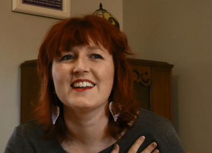

First symptoms
First symptomsJocelyn

Age: 31 years old
Time since first diagnosis: 3 years
Her background:
Jocelyn lives with her partner and works as a public affairs coordinator.
Jocelyn received her diagnosis in 2012 when she was 29 years old. While Jocelyn was reading a book one evening, she happened to scratch her breast and felt a fairly hard lump. She went to see her doctor the next day. He reassured her that it was probably nothing but that he would send her in for a mammogram. For Jocelyn, what followed went really fast after this test. Within 4-5 weeks after feeling the lump, she had her mastectomy together with the removal of 14 lymph nodes. Chemo and radiation followed. She is now on a short medical leave as she is going through her breast reconstruction process. She will undergo more surgery to remove a little indent on the surface of her breast. She has not yet decided if she wants to put a nipple tattoo on her new breast. It surprised Jocelyn that the tissue expanders under her skin were even more painful than the whole operation to move the muscle and skin from her back to the front. Another surprise was that the whole reconstruction process requires more than one or two surgeries; Jocelyn expects to undergo about five surgeries in total.
During the treatment process Jocelyn wondered about questions such as ‘what is beauty?’ and ‘what does it mean to be a woman?’ Was she still a woman without her boobs, eyelashes and having lost her fertility? Jocelyn was unable to pay for the extraction and freezing of her eggs. This means that she has about 20% change of being fertile after she finishes her hormone therapy in about four years. Her menstruation did return after the treatment. Because of the treatment her body had gone through the menopause.
Jocelyn is now volunteering to provide free transport for other patients to get to their cancer treatments. During her own treatment, she benefited from this service, to make the two hour trips to the hospital from her home which had helped give her partner a break from the cancer and the driving. Jocelyn participated in a clinical trial on exercise and a second trial to test a cancer vaccine. She has mixed feelings about the second trial as it involves a lot of input and effort from her side. The plus side of being involved in the trial is that she undergoes a lot of testing which gives her some reassurance. Jocelyn feels lucky to have good medical coverage through her work, if she had developed cancer a few years earlier while at another job she would not have been so lucky.